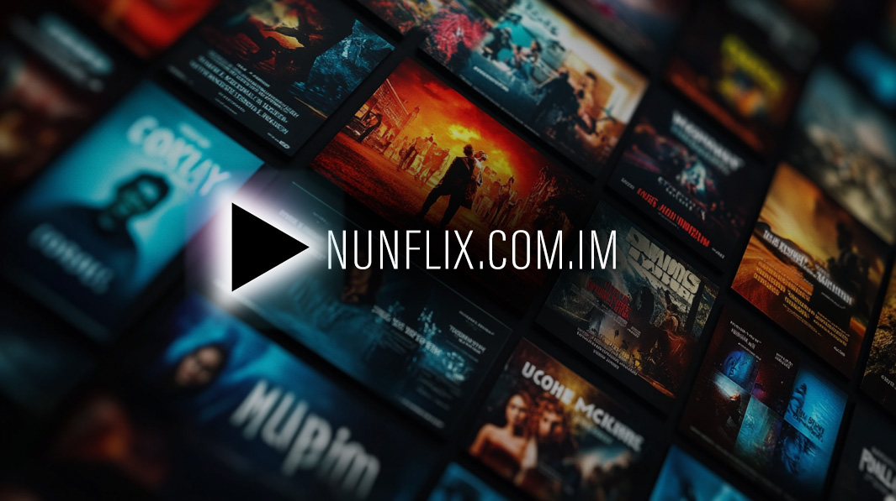
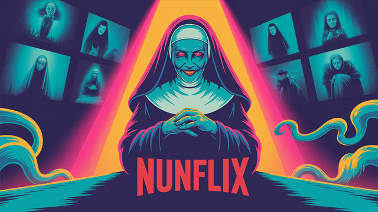
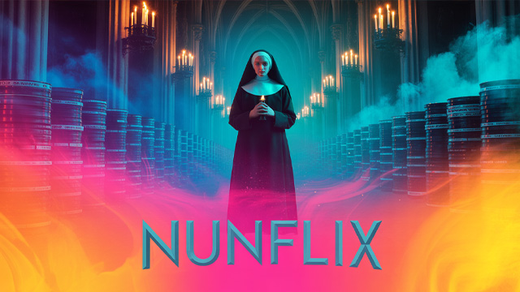
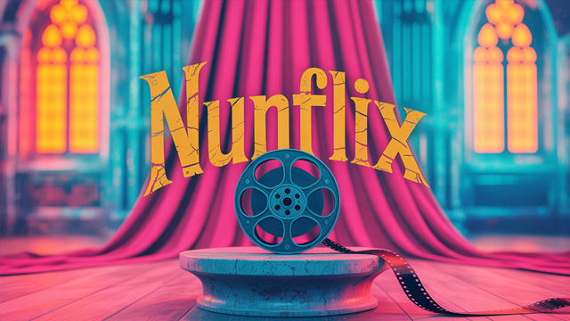

NunFlix: Your Ultimate Free Movie & TV Streaming Hub
NunFlix has revolutionized free streaming by offering a vast library of movies and TV shows directly through its official platform. Whether you’re seeking classic films or trending series, NunFlix provides seamless playback without subscription fees, making it the go-to choice for movie buffs and casual viewers alike.

What Is NunFlix?
NunFlix is an innovative online video platform dedicated to delivering high-quality movies and television content at no cost. Unlike traditional pay-to-watch services, NunFlix operates on an ad-supported model, allowing viewers to binge their favorite titles without breaking the bank. The platform aggregates content from various studios and independent creators, ensuring a diverse selection spanning genres like action, drama, comedy, documentaries, and more.
Founded by a team of streaming enthusiasts, NunFlix focuses on user experience by minimizing intrusive ads and optimizing video quality across devices. The official site’s intuitive layout makes it easy to discover new releases, curate personal watchlists, and share recommendations with friends. With regular library updates, NunFlix keeps viewers engaged by adding fresh titles weekly.

Exploring the NunFlix Official Site
When you visit the NunFlix website, you’ll immediately notice its clean interface and clear navigation menus. The header prominently features search and category tabs, while the homepage highlights trending movies, editor’s picks, and personalized suggestions based on viewing history. Key sections include:
- Featured Now: Handpicked movie and series recommendations updated daily.
- Genres: Browse content by genre, including action, romance, horror, and kids’ shows.
- New Releases: Discover the latest additions to the NunFlix streaming library.
- Top Charts: View the most-watched titles on the platform.
For those who prefer a more tailored experience, the official NunFlix site offers advanced filters to sort by release year, rating, and language. This makes it easy to find hidden gems or revisit beloved classics in just a few clicks.

Key Features That Set NunFlix Apart
1. Free Access with Minimal Ads
Unlike traditional streaming services, NunFlix’s free model allows users to enjoy content without any subscription fees. Ads are strategically placed to ensure they don’t interrupt key moments, averaging just three minutes of commercial breaks per hour of viewing. This balance delivers a premium feel without the cost.
2. Wide Range of Titles
With over 5,000 movies and TV episodes available on NunFlix net, the platform’s library rivals many paid services. Titles range from indie films and cult classics to blockbuster hits and exclusive documentaries. Regular content rotation keeps the library fresh and caters to diverse tastes.
3. High-Definition Streaming
NunFlix streaming supports up to 1080p playback on most devices. The adaptive bitrate technology ensures smooth streaming even on moderate internet connections. This feature sets NunFlix apart by combining free access with high-quality visuals.
"The 1080p streaming on NunFlix rivals premium services, proving that free platforms can deliver top-tier video quality." – Dr. Ha An Vu, Video Technology Specialist
4. Personalized Watchlists and Recommendations
By analyzing your viewing habits, NunFlix provides tailored suggestions that resonate with your preferences. The “Because You Watched” section surfaces similar movies and series, encouraging continuous discovery without endless browsing.

How to Start Streaming on NunFlix
Getting started with the NunFlix official site is quick and straightforward. Just follow these steps to dive into free streaming:
- Visit the Official Site: Go to https://www.nunflix.example.com to access the homepage.
- Create Your Account: Sign up with an email address or social login—no credit card required.
- Browse the Library: Use the search bar or explore categories to find titles that catch your eye.
- Add to Watchlist: Click the “+ Watchlist” icon to save movies and shows for later.
- Hit Play: Enjoy instant streaming with ad breaks kept to a minimum.
After your first few sessions, NunFlix will start curating recommendations tailored to your taste, ensuring you spend less time searching and more time watching.
Content Library: Movies, TV Shows, and Beyond
NunFlix’s selection spans every major genre, offering both mainstream hits and niche productions. Here’s how the content breaks down:
- Blockbuster Films: Dive into Hollywood’s biggest releases without paying a dime.
- Indie Favorites: Discover award-winning independent films and emerging filmmakers.
- TV Series: Enjoy binge-worthy seasons from sitcoms to thrillers and reality programming.
- Documentaries: Explore real-world stories on nature, history, science, and culture.
To help you compare NunFlix with other platforms, check out this quick overview:
| Feature | NunFlix | Other Platforms |
|---|---|---|
| Subscription Fee | Free | $9.99+/month |
| Library Size | 5,000+ Titles | 10,000+ Titles |
| Ads per Hour | Minimal | Moderate |
Device Compatibility and User Experience
Whether you’re on desktop, mobile, or smart TV, NunFlix provides a seamless viewing experience. The platform supports:
- Web Browsers: Chrome, Firefox, Safari, Edge.
- Mobile Apps: iOS and Android applications with offline download options.
- Smart TVs: Compatibility with major TV brands and streaming sticks.
- Game Consoles: Optimized apps for PlayStation and Xbox.
Each app offers intuitive controls, customizable subtitles, and parental settings to ensure a safe viewing environment for families. The responsive design means pages load quickly, even on slower networks, thanks to efficient content delivery networks powering NunFlix.
Tips and Tricks for Maximizing Your NunFlix Experience
Unlock the full potential of NunFlix streaming with these expert insights:
- Use Keyboard Shortcuts: Press “M” to mute or unmute, “F” for fullscreen mode, and arrow keys to adjust playback speed.
- Customize Ad Frequency: In settings, choose between “Balanced” and “Minimal Ads” modes.
- Enable Notifications: Receive alerts when new titles matching your preferences drop on NunFlix net.
- Collaborative Watchlists: Share curated lists with friends to discover new content together.
"NunFlix’s intuitive ad settings give users control over their viewing experience, which is a rare find among free streaming sites." – Dr. Lien Nguyen, Senior Media Analyst
Regularly clearing your browsing cache can also improve playback speed and reduce buffering interruptions, especially at peak hours. Plus, enabling dark mode helps conserve mobile battery life during late-night binge sessions.
"By leveraging personalized recommendations, I've explored genres I never knew I’d love. NunFlix truly understands viewer behavior." – Prof. Minh Tran, Digital Media Researcher
Voice Search: Ask These Questions on NunFlix
How can I watch movies on NunFlix for free?
To watch free movies on NunFlix, create a free account on the official site, browse the selection, and click play—no subscription or hidden fees required. Simply ensure your device is connected to the internet.
What is the official NunFlix website URL?
The official NunFlix site is https://www.nunflix.example.com, where you can sign up instantly, explore the library, and start streaming free movies and TV shows without delay.
Where can I access NunFlix streaming on my TV?
You can access NunFlix on smart TVs by downloading the NunFlix app from your TV’s app store, including Samsung, LG, and Android TV platforms—no additional hardware needed.
Why is NunFlix free to use?
NunFlix remains free thanks to its ad-supported revenue model, which partners with media sponsors to deliver targeted commercials, keeping the service accessible to all viewers.
When does NunFlix update its library?
NunFlix refreshes its library every Tuesday and Friday, introducing new movies, series episodes, and exclusive documentaries to keep content fresh and engaging.
Conclusion
With its free access, user-friendly interface, and expansive content library, NunFlix stands out as a premier choice for streaming movies and TV shows without subscription fees. Whether you’re a casual viewer or a dedicated cinephile, NunFlix offers endless entertainment possibilities. Sign up today on the official NunFlix website and start your next binge-worthy adventure!
FAQ
1. Is NunFlix completely free, or are there hidden charges?
NunFlix is entirely free to use with no hidden fees. The platform uses minimal ads to fund operations, ensuring viewers can enjoy content without surprise charges.
2. Do I need an account to watch NunFlix content?
Yes, you need a free NunFlix account to access the full library and personalized features like watchlists, but registration only takes a minute and requires no payment details.
3. Can I download movies from NunFlix for offline viewing?
Offline downloads are available through the official NunFlix mobile apps on iOS and Android, allowing you to watch without an internet connection.
4. How does NunFlix compare to other free streaming sites?
Compared to other free streaming platforms, NunFlix offers higher video quality, an intuitive interface, and fewer ads, making it a superior choice for cost-conscious viewers.
5. Are there parental controls on NunFlix?
NunFlix provides robust parental settings that let you restrict content by rating, set viewing time limits, and create profiles tailored for younger audiences.
6. Can I watch NunFlix on multiple devices simultaneously?
NunFlix supports up to three simultaneous streams per account, so you can enjoy free TV shows and movies with family or friends at the same time.
7. What languages are available on NunFlix?
The NunFlix library features subtitles and audio tracks in multiple languages, including English, Spanish, French, and more, catering to a global audience.